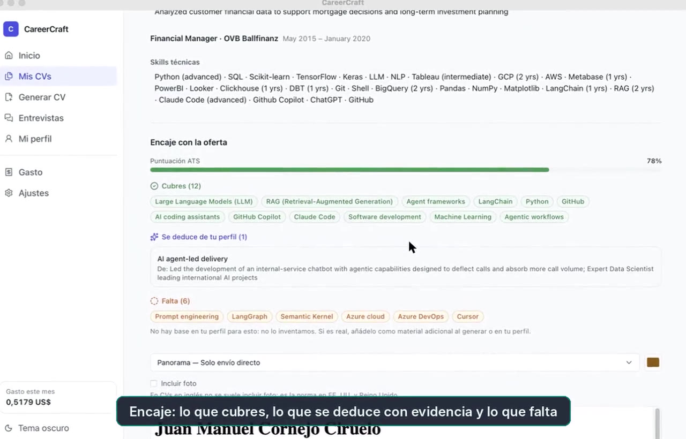
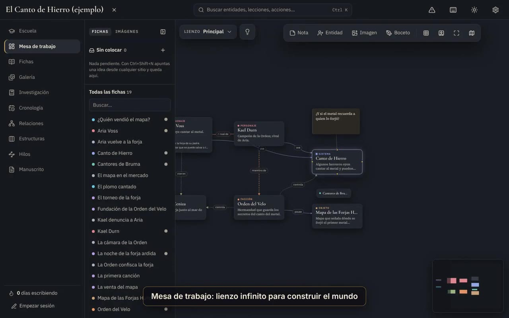
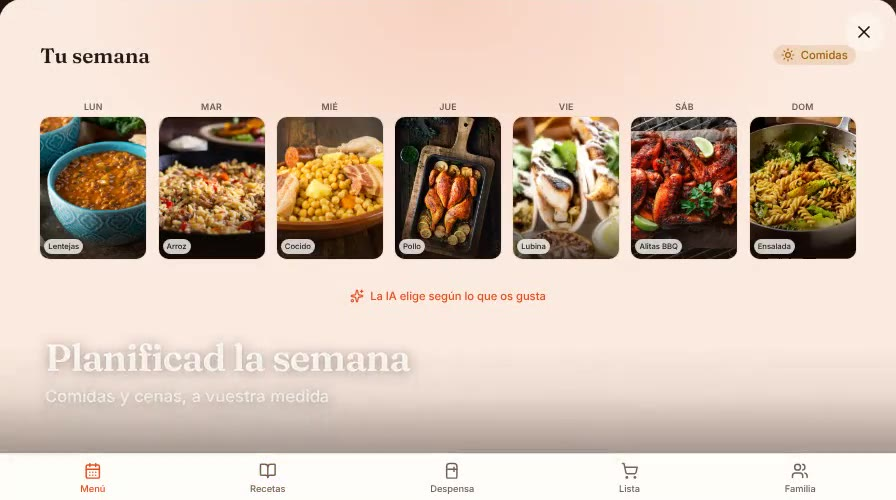
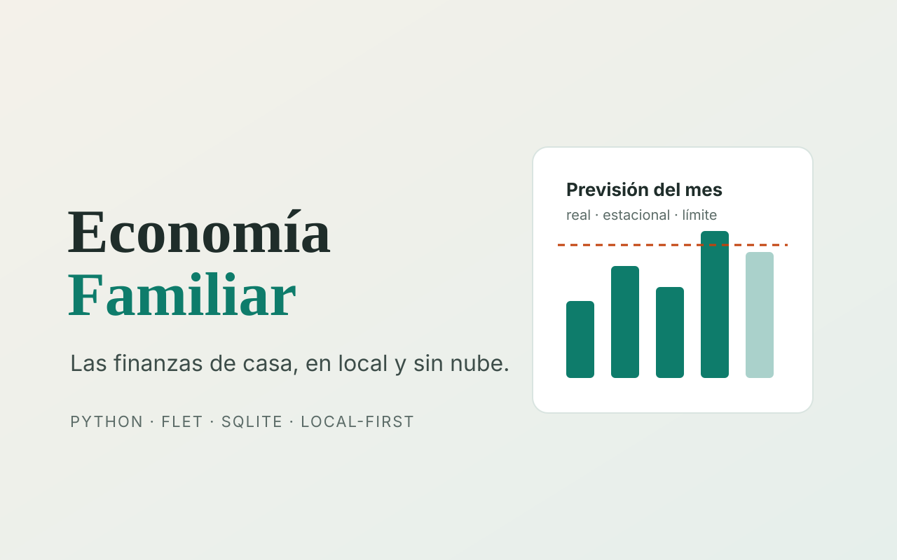

Proyectos recientesRecent projects
Cuatro aplicaciones completas diseñadas y desarrolladas por mí en 2026. Los repositorios son privados, así que cada proyecto tiene una demo y una explicación de cómo funciona por dentro.Four complete applications I designed and built in 2026. The repositories are private, so each project comes with a demo and an explanation of how it works inside.

- Python
- FastAPI
- React + TypeScript
- Claude (Sonnet / Haiku)
- RAG
Asistente de carrera con IA que construye tu perfil, analiza cada oferta y genera un CV adaptado que pasa una auditoría de veracidad antes de exportarse. Incluye simulador de entrevistas con feedback STAR.
AI career assistant that builds your profile, analyses each job offer and generates a tailored CV that must pass a truthfulness audit before export. Includes an interview simulator with STAR feedback.

- TypeScript
- React 19
- Tauri 2 (Rust)
- SQLite + FTS5 (WASM)
- Claude API
App de escritorio local-first para escribir novelas: lecciones de oficio cuyos ejercicios crean fichas reales, lienzo infinito para construir el mundo, cronología, relaciones, hilos de trama y manuscrito, con un asistente Claude que hace de editor.
Local-first desktop app for novelists: craft lessons whose exercises create real story entities, an infinite canvas for world-building, timeline, relationships, plot threads and manuscript, with a Claude assistant acting as an editor.

- TypeScript
- Next.js 16
- React 19
- tRPC
- Supabase (Postgres · Auth · Realtime)
PWA en producción que junta recetario, menú semanal, despensa y lista de la compra. La IA crea o importa recetas, lee tickets del súper con visión y planifica la semana teniendo en cuenta las alergias de la familia.
Production PWA bringing together recipe book, weekly menu, pantry and shopping list. AI creates or imports recipes, reads supermarket receipts with vision and plans the week around the family's allergies.

- Python 3.12
- Flet (Flutter)
- SQLite
- openpyxl
- smtplib
Sustituye el Excel familiar: importa el CSV del banco sin duplicados, categoriza el 94 % de los movimientos de forma automática aprendiendo del histórico y ofrece límites por categoría y una previsión del mes que se puede explicar.
Replaces the family spreadsheet: it imports the bank CSV without duplicates, auto-categorises 94% of transactions by learning from history, and provides per-category limits and an explainable monthly forecast.

Redes convolucionales (VGG16, VGG19, Inception V3) para clasificar tumores en resonancias magnéticas. 84 % de accuracy y 100 % de recall.
Convolutional networks (VGG16, VGG19, Inception V3) to classify tumours in MRI scans. 84% accuracy and 100% recall.

Análisis exploratorio del mercado laboral, el poder adquisitivo y el precio de la vivienda según el lugar de residencia.
Exploratory analysis of the labour market, purchasing power and housing prices depending on place of residence.

Proyecto multidisciplinar: modelo de detección de peces con CNN desplegado en AWS, liderando el equipo de Data Science.
Multidisciplinary project: a CNN fish-detection model deployed on AWS, leading the Data Science team.

Análisis exploratorio y modelo predictivo de precios integrado con el resto de verticales del equipo.
Exploratory analysis and a price-prediction model integrated with the team's other verticals.

Paquete de Python para el preanálisis rápido de datasets numéricos y categóricos.
Python package for fast pre-analysis of numerical and categorical datasets.

Random Forest que predice el tipo de erupción a partir de datos de sensores en las laderas del volcán.
Random Forest predicting eruption type from sensor data on the volcano's slopes.